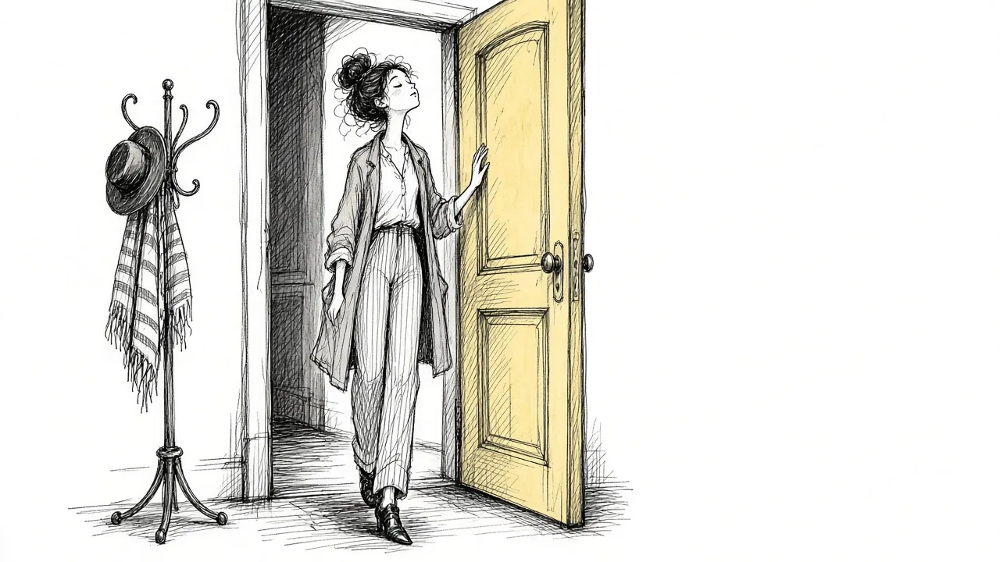

Facing the Hard Places: Returning to Spaces That Remind You of Them

There may be places you have not been able to go since they died. The hospital where they spent their last days. The restaurant you always went to together. Their bedroom. The grocery store aisle where they used to grab their favorite snack. Maybe even a whole town.
Avoiding places linked to a loss is very common. These spaces can bring floods of memories and feelings. But over time, avoiding them can make your world smaller and your grief harder. This guide explores why certain places feel so hard, why gently returning can help, and how to go back at your own pace.
Why places hold so much grief
Places are powerful memory triggers. When you walk into a room, sounds, smells, and sights can bring back moments in vivid detail. That is part of what makes certain places so meaningful. It is also what can make them so painful after a death.
Places linked to a loss tend to fall into a few groups:
- Places of shared life. Your home, their home, favorite restaurants, vacation spots.
- Places of illness or death. Hospitals, care homes, the scene of an accident.
- Places of ritual. The funeral home, the cemetery, a place of worship.
- Everyday places. Stores, parks, or routes you used to travel together.
Each kind of place can carry different feelings. A favorite restaurant might bring longing. A hospital might bring fear or trauma.
A place can hold a memory, but it cannot take the person from you.
Why avoiding them makes sense
It is natural to avoid places that bring pain. In the early days of grief, steering clear of certain places can be a way of protecting yourself from being overwhelmed. There is nothing wrong with needing time.
But when avoidance continues for a long time, it can start to cost you.
- Your life shrinks. You may stop going to places you once loved.
- Fear grows. The longer you avoid a place, the scarier it can feel to return.
- Grief stays stuck. Avoiding reminders can keep feelings from moving through.
- Practical problems arise. Avoiding a hospital, a store, or a road can make daily life harder.
- Connection fades. Some places hold your loved one's memory in a way that could feel comforting, if you could face them.
Our guide to breaking the avoidance cycle explains why avoidance can keep grief stuck.
The benefits of going back
Returning to hard places is not about forcing yourself to suffer. It is about slowly reclaiming parts of your life. Many people find that going back, even once, changes how a place feels.
People who return to meaningful places often describe:
- Feeling closer to their loved one.
- Being surprised that it was less painful than expected.
- Feeling proud of themselves for facing something hard.
- Remembering happy moments, not only sad ones.
- Feeling less afraid of their own grief.
This does not mean every visit will be easy. But many people find that the hardest part is the anticipation, not the visit itself.
Going back gently
There is no right timeline for returning to hard places. You might be ready in weeks, months, or years. When you feel ready to try, here are some gentle approaches.
Start with easier places
Make a list of places you have been avoiding. Rank them from least to most difficult. Start with one near the bottom of the list. This might be a coffee shop you visited together occasionally, rather than the hospital where they died.
Take someone with you
Bringing a trusted friend or family member can make the visit feel safer. You might tell them what you need: silence, conversation, or a hand to hold.
Plan a short visit
You do not have to stay long. You can walk in, look around, and leave. The next time, you might stay a little longer.
Bring something meaningful
Some people bring a photo, a flower, or something that belonged to their loved one. Others write a note to leave or read aloud.
Let feelings come
When you arrive, you may feel sadness, longing, anger, or even numbness. Let those feelings be there. You do not have to make them go away. Notice your breath and your feet on the ground. Our guide to mindful grieving offers simple grounding practices.
Plan something soothing afterward
After visiting a hard place, give yourself something comforting. A walk, a warm drink, a call with a friend, or simply some quiet rest.
When the place is home
Sometimes the hardest place is home itself. Their chair, their closet, their side of the bed. For many people, the home is filled with reminders in every room.
You do not have to change everything at once. Some people keep certain spaces exactly as they were for a while. Others slowly make changes over time. You might start by moving one item, or by sitting in their chair for a few minutes.
If you are thinking about what to do with their belongings, our guide to making decisions after a loss can help.
When the place is linked to trauma
If a place is connected to a traumatic death, such as an accident site or a hospital room where something distressing happened, returning may bring up intense memories or physical reactions. In this case, it is especially important to go slowly.
You might start by looking at photos of the place, or driving past it without stopping. Working with a therapist trained in trauma can make this process safer. Our guide to intrusive memories after a death explains why trauma memories can be so persistent.
Places you may choose not to revisit
Not every place needs to be faced. Some places may not be important to your life going forward. If you never want to return to a certain building or city, that may be perfectly okay.
The question to ask is: "Is avoiding this place limiting my life in ways that matter to me?" If the answer is yes, it may be worth working toward going back. If the answer is no, you can let it be.
Making new memories
Over time, many people find that they can visit places that once felt unbearable and even create new memories there. You might bring your children to the park where you used to walk with their grandparent. You might celebrate a birthday at a favorite restaurant.
This does not erase the old memories. It layers new ones on top, so the place becomes a part of your ongoing life, not only a reminder of loss.
Reclaiming your world
Facing the hard places is a gradual process. Some days you will be ready, and some days you will not. Both are okay.
Each step you take, no matter how small, is a way of saying that your life can still include the places where you loved them. And many people discover that those places, once faced, hold not only grief but also warmth, connection, and memory worth keeping.
This article is for general information and support. It is not medical or mental health advice. If grief has become unbearable or you are thinking about harming yourself, call or text 988 right now.
Related reading

Acceptance and Remembrance: Two Ideas That Shape Healthy Grief
How acceptance and remembrance work together to help people carry grief while staying connected to the person they lost.

Coping With Grief: A Practical Guide
Practical, everyday ways to cope with grief, from the first days through the months and years that follow.

Self-Compassion in Grief
Grieving people are often harsh with themselves. How self-compassion can ease guilt and help you carry loss.